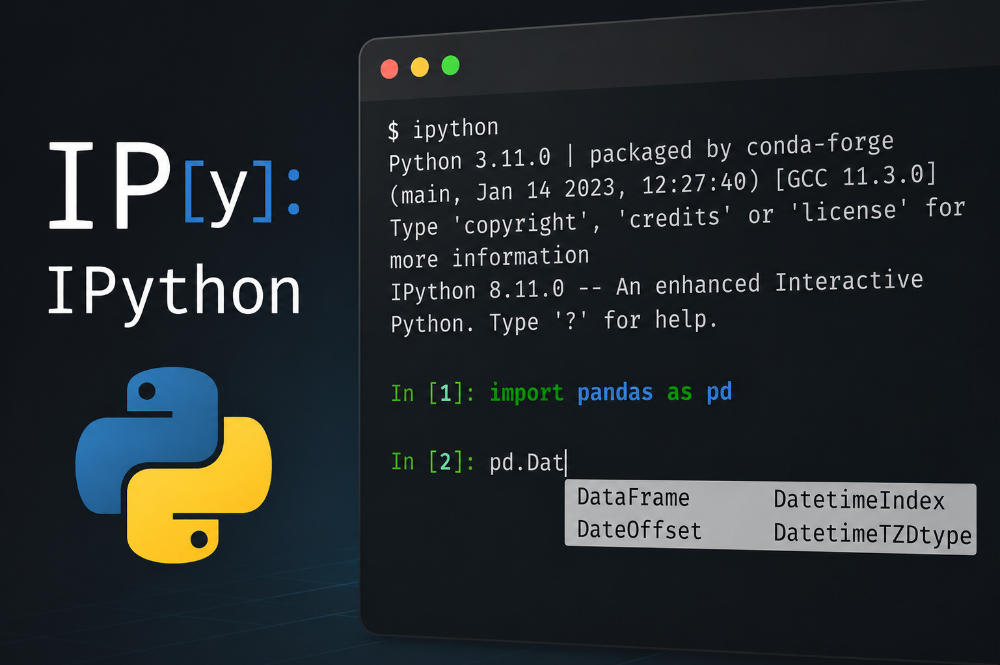
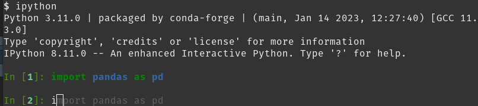
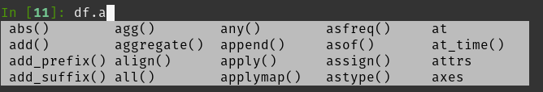
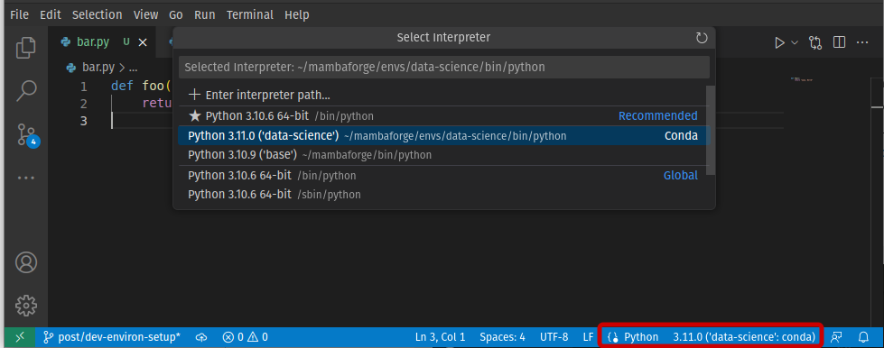

Introduction
Programming for Data Analysis can be quite different in some aspects of “traditional” software development. At first, you don’t expect a specific input (dependent variables, or features) and you must iterate a lot until you get a satisfactory output (predictions of a model). There is a lot more exploring. Often you stop typing to ask yourself:
- “What is the mean of variable \(X\)?”
- “How the distribution of values looks like?”
- “How the models’ performance compare?”
You are very much likely to fail on your earlier assumptions. This is normal, but you should – to borrow a system design concept – fail fast. You want to iterate quickly over analysis and visualizations to better understand the data set you are dealing with. Also, you want to test different algorithms to select the best for the problem in question.
Therefore, the development workflow in Data Science tends to be quite different from traditional software too. Quick iteration is one of the reasons why interpreted languages (like Python and R) are used way more often than compiled languages in Data Science. We should take the most out of this by configuring our development environment properly.
RStudio and Spyder are quite similar in their workflow: you have text editing for scripts, an iterative shell for running code, a panel for displaying plots, data frame inspector, all integrated for you. RStudio is focused on R and Spyder, while a great Python IDE for Data Science, does not have the best interface (yet?). Another popular IDE for Data Science is JupyterLab, but it is way more focused on notebooks and needs a lot of tinkering for be a good development environment for scripts.
Then, there is the well-known Visual Studio Code, or VS Code for short, that is used for many programming languages and purposes. It is not an out-of-box IDE for Data Science like the previous ones, but its versatility is worth it.
There are quite a number of VS Code extensions for Data Science (like Jupyter). But on this post, I will show how to configure IPython in VS Code for an enhanced interactive Python shell and kernel.
Overview
IPython adds many features on top of the default Python shell, like auto-completion, input history, and “magic commands” to control the environment or perform tasks. It is also highlights syntax, so that is nice. By using the Python shell efficiently, you are very likely to change your workflow and be more productive.
After integrating it to my development environment, I barely see a reason to use Jupyter notebooks. The exception would be for presenting reports with plots and tables, or for educational purposes. You can easily explore and inspect objects on the terminal and, after getting the hang of it, it is faster than running cells.
Example usage
Suppose you started to explore your data and you have the following Python script,
import pandas as pd
df = pd.DataFrame({"x": [1, 2, 3], "y": ["a", "a", "b"]})When integrated to the VS Code terminal, you can run selected lines with Shift + Enter. Running it the first time will start an IPython shell in your terminal. You can also open the Command Palette (Ctrl + Shift + P) and select Python: Start REPL.
In [1]: import pandas as pd
...:
...: df = pd.DataFrame({"x": [1, 2, 3], "y": ["a", "a", "b"]})Before writing any more code to your script, you can explore your data set in the IPython console.
In [2]: df
Out[2]:
# x y
# 0 1 a
# 1 2 a
# 2 3 b
In [3]: df.describe()
Out[3]:
# x
# count 3.0
# mean 2.0
# std 1.0
# min 1.0
# 25% 1.5
# 50% 2.0
# 75% 2.5
# max 3.0
In [4]: df["y"].value_counts()
Out[4]:
# a 2
# b 1
# Name: y, dtype: int64You can also type ? after an object to inspect it.
In [5]: df?
# Type: DataFrame
# String form:
# x y
# 0 1 a
# 1 2 a
# 2 3 b
# Length: 3
# File: ~/mambaforge/envs/data-science/lib/python3.11/site-packages/pandas/
# core/frame.py
# Docstring:
# Two-dimensional, size-mutable, potentially heterogeneous tabular data.Figure 1 and Figure 2 show auto-completion features of IPython that allows you to type less.


IPython vs Jupyter console
Yes, JupyterLab console and VS Code’s interactive window are effectively an IPython console. However they share the same flaw: they are associated with a single .py or .ipynb file.
This makes all the difference. It induces you to work on a single file. Even while exploring and testing, you should be thinking how to organize modules at different files.
Setting up IPython in VS Code
First, make sure you have the VS Code’s Python extension installed.
You also need to install ipython package in your Python environment. It is good practice to create an isolated environment to work on each project. There are many environment managers for Python, like venv and Conda.
# virtualenv
python -m venv /path/to/venv
source /path/to/venv/bin/activate
pip install ipython
# Conda
conda create --name my-env python=3.9 ipython
conda activate my-envFigure 3 shows how to select the interpreter from this environment when working on your files. You can also press F1 (or Ctrl + Shift + P) and search Python: Select Interpreter.

Now set launch arguments to open an IPython session instead of the default Python terminal. Open VS Code settings file:
Press F1 (or Ctrl + Shift + P)
Go to Preferences: Open User Settings (JSON)
Set
python.terminal.launchArgsto run IPython:{ "python.terminal.launchArgs": ["-m", "IPython"] }
Profiles
IPython can use multiple profiles, with separate configuration and history. By default, if you don’t specify a profile, IPython always runs in the default profile.
Profiles have a configuration file which you can use to customize IPython options. If you don’t have one yet (usually at ~/.ipython/profile_default/ipython_config.py), you may create it with
# Create an IPython profile by name
# If `profilename` is empty, use the default profile
$ ipython profile create [profilename]
# Check config file's location
$ ipython locate profile [profilename]Use --profile option in VS Code settings to select a non-default profile.
{
"python.terminal.launchArgs": ["-m", "IPython", "--profile", "profilename"]
}Auto-reloading modules
Imagine you have a Python module, bar.py, with some useful functions you will reuse on other script.
# bar.py
def foo():
return "Hello World"In [1]: from bar import foo
In [2]: foo()
Out[2]: 'Hello World'Now suppose that you make some change to foo() function in the bar.py file.
# bar.py
def foo():
return "Hey, you"You would like that to be updated in your IPython session too, because you want to be iterative with your code. However, that is not the default behavior.
In [3]: from bar import foo
In [4]: foo()
Out[4]: 'Hello World'If you are not working at a single gigantic Python file or Jupyter notebook that does everything but instead building a maintainable modular code, it would be too troublesome and time-consuming to close the terminal, reopen IPython and reload functions/classes from modules every time there are changes. When exploring data or models it is even worse, since you have to reload data or maybe re-run a training step.
Fortunately, there is an built-in extension called autoreload to change that behavior (and with some flexibility).
%autoreload 2Reload all modules (except those excluded by%aimport) every time before executing the Python code typed.
In [5]: %load_ext autoreload
In [6]: %autoreload 2
In [7]: foo()
Out[7]: 'Hey, you'The argument 2 tells autoreload to reload all modules every time before executing the Python code typed. You can automate this step with your IPython configuration file so you don’t need to repeat the commands at every session start up.
Open your profile’s configuration file (ipython_config.py) and change/add these lines:.
## A list of dotted module names of IPython extensions to load.
# Default: []
c.InteractiveShellApp.extensions = ["autoreload"]
## lines of code to run at IPython startup.
# Default: []
c.InteractiveShellApp.exec_lines = ["%autoreload 2"]tl;dr
Make sure VS Code’s Python extension is installed.
Create a Python environment and install
ipython. Select it as Python interpreter in VS Code.Open VS Code settings: F1 > Preferences: Open User Settings (JSON)
Set
python.terminal.launchArgsto run IPython:{ "python.terminal.launchArgs": ["-m", "IPython"] }Create IPython profile:
ipython profile create [profilename]Enable
autoreloadextension in the configuration file.c.InteractiveShellApp.extensions = ["autoreload"] c.InteractiveShellApp.exec_lines = ["%autoreload 2"]Run selected code with Shift + Enter